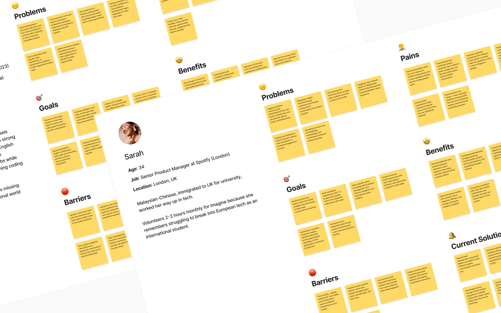
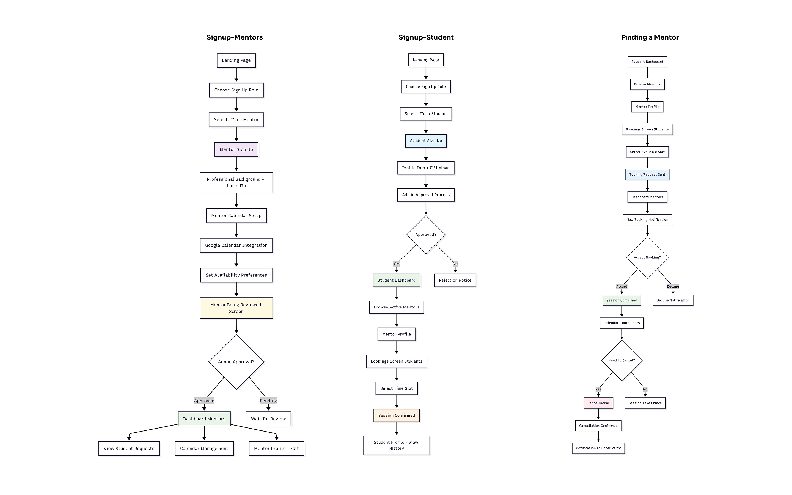
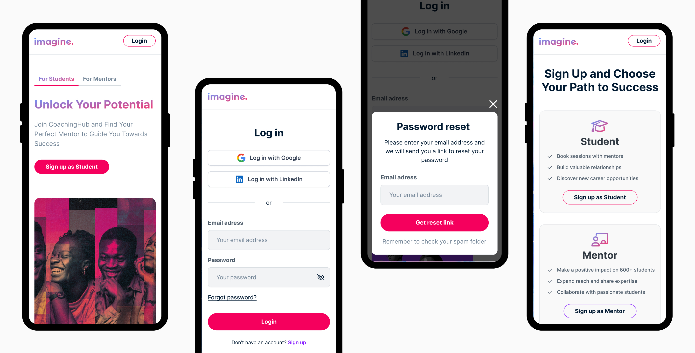
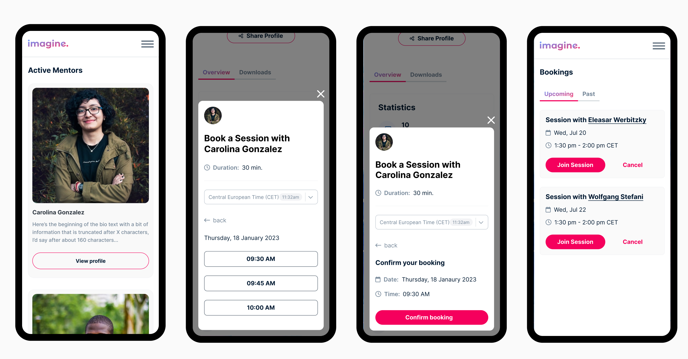
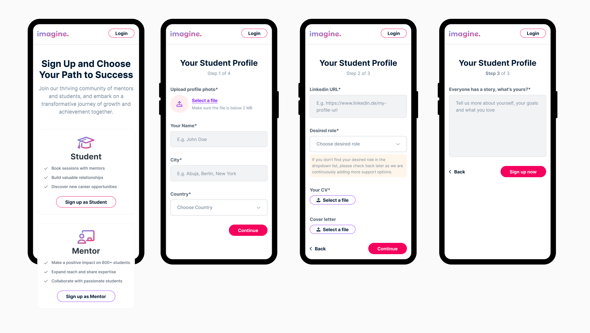
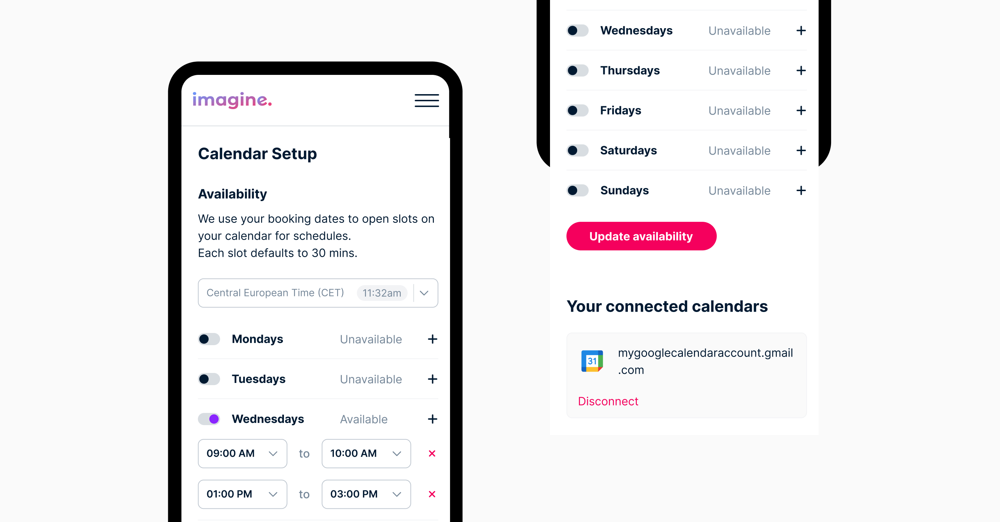

Connecting 600+ Nigerian Graduates with Global Mentors in 3 Months
Who was involved?
- Me (Wolfgang) as Freelance UX/UI Designer
- Imagine Foundation e.V. team
- External development team
Sprint Timeline
- 3-month MVP sprint (2024)
- Weekly kickoffs
- Mobile-first design approach
- Iterative design & development
The Challenge
- Design a coaching platform MVP for 600+ Nigerian graduates in just 3 months
- Replace inefficient manual mentor-student coordination processes
- Create mobile-optimized experience for Nigerian user context and connectivity
- Build scalable calendar system with Google integration under tight budget constraints
- Balance feature scope with rapid deployment needs for GIZ partnership requirements
Fast-Track MVP Development
Sprint-Based Design
Weekly stakeholder kickoffs to define priorities, make rapid decisions, and keep the 3-month timeline on track
Mobile-First Strategy
Prioritized mobile experience recognizing smartphone-first usage patterns and data constraints in Nigeria
Rapid User Research
Created focused personas for Nigerian students and mentors to guide quick design decisions without extensive research
MVP Feature Scoping
Ruthlessly prioritized core user flows: sign-up, mentor discovery, booking, and profile management
Developer Collaboration
Weekly technical feasibility checks to ensure designs could be built within timeline and budget limits
Strategic Trade-offs
Made informed compromises between ideal user experience and practical constraints to ship on time
MVP Reality Check
This project showcases rapid MVP (Minimum Viable Product) design under real-world constraints. With a 3-month timeline and limited budget, I focused on creating a functional mobile-first platform that could launch quickly and serve real users. While not every design detail is perfect, the platform successfully connects Nigerian students with mentors and is actively being used today. This case study demonstrates pragmatic design decision-making and sprint-based collaboration.
Sprint-Based Mobile Interface Design
User Personas: Quick but Focused Research
Created streamlined personas based on Imagine Foundation's existing student data and mentor feedback. These personas guided rapid design decisions without extensive user research, helping us stay within the 3-month timeline while addressing real user needs.
Three Critical User Flows: From Landing to Live Sessions
I mapped three essential user journeys that would determine MVP success: mentor onboarding, student onboarding and mentor booking flow. These became our sprint roadmap for prioritizing which screens to build first.
Authentication & Onboarding Flow
Designed streamlined sign-up process with role selection (student vs mentor) and social login options. Prioritized speed and simplicity for mobile users with potentially limited data connectivity.
Student Experience: From Discovery to Booking
Mentor discovery and booking flow designed for Nigerian students. Focused on simple mentor information, simple booking process, and data-conscious design patterns.
 Calendar Management
Google Calendar integration designed within technical constraints while providing essential scheduling features.
Sprint Process & Methodology
Week 1-2: Foundation Sprint
Kickoff meetings, stakeholder alignment, and rapid persona development based on existing Imagine Foundation user data
Week 3-4: Core Flow Design
Designed essential user journeys: student sign-up, mentor discovery, and booking flow with weekly reviews
Week 5-8: Feature Development
Iterative design of dashboard interfaces, profile management, and calendar integration with continuous developer collaboration
Week 9-10: System Integration
Google Calendar API integration design, email notification workflows, and technical feasibility refinements
Week 11-12: Polish & Handoff
Final screen optimizations and handoff
Sprint Delivery Results:
On-Time Delivery
Complete mobile platform delivered within sprint deadline
Live Platform
Platform successfully serving Nigerian students and mentors
Key Learnings from Sprint-Based Design
- MVP mindset drives focus: Working within a 3-month constraint forced ruthless prioritization of features that truly matter for user success, eliminating nice-to-have elements.
- Weekly stakeholder alignment prevents scope creep: Regular kickoff meetings kept everyone aligned on priorities and allowed for rapid course corrections without derailing the timeline.
- Technical collaboration is essential for MVP success: Weekly developer check-ins ensured every design decision was implementable within budget and timeline constraints.
- Pragmatic trade-offs enable shipping: Sometimes 80% of ideal UX delivered on time is more valuable than 100% perfect UX that ships late or over budget.
- Real user impact trumps design perfection: The platform is actively helping Nigerian students connect with mentors today. Proof that functional MVP design creates real value.
- Sprint methodology scales for social impact: Fast iteration and stakeholder collaboration work especially well for NGO projects with funding constraints and urgent social needs.